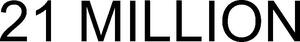

Trade Mark Journal No.2026/010 6 March 2026
WO0000001903636 (3,14,25,28,43)
Office of origin: Germany
Date of International Registration:15 September 2025
Date of designation in the UK:
15 September 2025

International priority date claimed: 4 August 2025
(Germany)
- Class 3
- Non-medicated cosmetics and toiletry preparations; non-medicated dentifrices; perfumery, essential oils; bleaching preparations and other substances for laundry use; polishing preparations; grinding preparations; scouring solutions; make-up removing preparations; astringents for cosmetic purposes; agarwood [incense]; alum stones [astringents]; aloe vera preparations for cosmetic purposes; amber [perfume]; antistatic preparations for household purposes; antistatic dryer sheets; antiperspirants [toiletries]; breath freshening preparations for personal hygiene; breath freshening strips; breath freshening sprays; ethereal essences; ethereal oils; essential oils of citron; essential oils for aromatherapy use; essential oils of cedarwood; essential oils of lemon; eye-washes, not for medical purposes; eyebrow cosmetics; eyebrow pencils; eyebrow styling wax; gel eye patches for cosmetic purposes; soap for brightening textile; cake flavourings [essential oils]; bath bombs; bath salts, not for medical purposes; bath tea for cosmetic purposes; bath preparations, not for medical purposes; balms, other than for medical purposes; beard dyes; moustache wax; basma [cosmetic dye]; bergamot oil; pumice stone; preparations to make the leaves of plants shiny; skin whitening creams; bleaching preparations [decolorants] for household purposes; bleaching preparations [decolorants] for cosmetic purposes; laundry bleach; bleaching salts; bleaching soda; extracts of flowers [perfumes]; body glitters; polish for furniture and flooring; floor wax; sun-tanning preparations [cosmetics]; colour-brightening chemicals for household purposes [laundry]; chemical cleaning preparations for household purposes; essential oil-based creams for aromatherapy use; disposable steam-heated masks, not for medical purposes; deodorants for pets; deodorants for human beings or for animals; deodorant soap; detergents, other than for use in manufacturing operations and for medical purposes; diamantine [abrasive]; double eyelid tapes; canned pressurized air for cleaning and dusting purposes; scented wood; sachets for perfuming linen; wax melts [fragrancing preparations]; scented water; perfume water; javelle water; degreasing preparations, other than for use in manufacturing processes; depilatory preparations; depilatory wax; descaling preparations for household purposes; colorants for toilet purposes; paint stripping preparations; colour-removing preparations; colour run prevention laundry sheets; cosmetic dyes; greases for cosmetic purposes; varnish-removing preparations; stain removers; liquid latex body paint for cosmetic purposes; gaultheria oil; cosmetic stamps, filled; make-up palettes containing cosmetics; geraniol; toners for cosmetic purposes; shining preparations [polish]; laundry glaze; starch glaze for laundry purposes; smoothing preparations [starching]; smoothing stones; hair dyes; hair straightening preparations; hair lotions; hair spray; hair conditioners; washing-up liquids; skin hydrators for cosmetic purposes; heliotropine; henna [cosmetic dye]; ionone [perfumery]; jasmine oil; adhesive tapes for affixing false hair; adhesives for affixing false hair; adhesives for cosmetic purposes; adhesives for affixing false eyelashes; collagen preparations for cosmetic purposes; eau de cologne; body paint for cosmetic purposes; corundum [abrasive]; cosmetics; cosmetics for children; cosmetic pencils; cosmetic preparations for baths; cooling sprays for cosmetic purposes; cosmetic creams; cosmetic preparations for skin care; cosmetic preparations for slimming purposes; herbal extracts for cosmetic purposes; cleaning chalk; false nails; false eyelashes; lacquer-removing preparations; lavender oil; lavender water; food flavourings [essential oils]; leather bleaching preparations; creams for leather; leather preservatives [polishes]; lip glosses; lipsticks; lipstick cases; floor wax removers [scouring preparations]; lotions for cosmetic purposes; air fragrancing preparations; make-up; almond milk for cosmetic purposes; almond oil for cosmetic purposes; almond soap; massage gels, other than for medical purposes; massage candles for cosmetic purposes; carbides of metal [abrasives]; tissues impregnated with make-up removing preparations; cotton wool impregnated with make-up removing preparations; cloths impregnated with a detergent for cleaning; tissues impregnated with cosmetic lotions; baby wipes impregnated with cleaning preparations; laundry balls filled with laundry detergents; preparations for unblocking drain pipes; douching preparations for personal sanitary or deodorant purposes [toiletries]; micellar water; musk [perfumery]; mouthwashes, not for medical purposes; nail art stickers; nail glitter; nail varnish; nail varnish removers; nail care preparations; washing soda, for cleaning; soda lye; neutralizers for permanent waving; cleansers for intimate personal hygiene purposes, non-medicated; oils for toilet purposes; oils for cosmetic purposes; oils for cleaning purposes; hair waving preparations; oils for perfumes and scents; perfumes; wax for parquet floors; pastes for razor strops; mint for perfumery; mint essence [essential oil]; aromatics [essential oils] for beverages; phytocosmetic preparations; polishing creams; denture polishes; polishing paper; polishing rouge; polishing stones; polishing wax; pomades for cosmetic purposes; potpourris [fragrances]; dry-cleaning preparations; quillaia bark for washing; shaving preparations; shaving soap; shaving stones [astringents]; after-shave lotions; joss sticks; windscreen cleaning liquids; cleansing milk for toilet purposes; cleaning preparations; preparations for cleaning dentures; detergent tablets for coffee machines; rose oil; rust removing preparations; non-slipping liquids for floors; non-slipping wax for floors; safrol; ammonia [volatile alkali] [detergent]; sandpaper; air fragrance reed diffusers; whiting; glass cloth [abrasive cloth]; abrasive paper; abrasives; abraders; make-up; make-up preparations; make-up powder; emery; emery cloth; emery paper; sandcloth; tailors' wax; beauty masks; shoe cream; shoe polish; shoe wax; cobblers' wax; shoemakers' wax; antiperspirant soap; soap for foot perspiration; soap; serums for cosmetic purposes; shampoos for pets [non-medicated grooming preparations]; shampoos for animals [non-medicated grooming preparations]; shampoos; silicon carbide [abrasive]; sunscreen preparations; detergents for dishwashing machines; starch for laundry purposes; badian essence; cakes of toilet soap; talcum powder, for toilet use; wallpaper cleaning preparations; terpenes [essential oils]; turpentine for degreasing; oil of turpentine for degreasing; cosmetics for animals; toiletries; toilet water; tripoli stone for polishing; dry shampoos; drying agents for dishwashing machines; sheet masks for cosmetic purposes; vaginal washes for personal sanitary or deodorant purposes; petroleum jelly for cosmetic purposes; dressings for nail reconstruction; volcanic ash for cleaning; laundry blueing; laundry soaking preparations; laundry preparations; hydrogen peroxide for cosmetic purposes; cotton wool for cosmetic purposes; cotton swabs for cosmetic purposes; fabric softeners for laundry use; incense; cosmetic preparations for eyelashes; mascara; dental bleaching gels; toothpaste; dentifrices; teeth whitening pens; teeth whitening strips; decorative transfers for cosmetic purposes; depilatory sugar paste.
- Class 14
- Precious metals and their alloys; jewels; ornaments [jewellery, jewelry]; precious stones; semi-precious stones; clocks; time instruments; badges of precious metal; agates; amulets [jewellery]; charms for key rings; anchors [clock- and watchmaking]; pins [jewellery]; bracelets [jewellery]; bracelets made of embroidered textile [jewellery]; wristwatches; atomic clocks; sew-on tags of precious metal for clothing; ingots of precious metals; jewellery of yellow amber; brooches [jewellery]; busts of precious metal; cabochons; chronographs [watches]; chronometers; chronoscopes; cloisonné jewellery; diamonds; boxes of precious metal; threads of precious metal [jewellery]; clocks and watches, electric; ivory jewellery; barrels [clock- and watchmaking]; figurines of precious metal; jewellery findings; ornaments of jet; commemorative statuary cups made of precious metal; gold thread [jewellery]; necklaces [jewellery]; iridium; boxes of precious metal; chains [jewellery]; tie clips; tie pins; crucifixes as jewellery; crucifixes of precious metal, other than jewellery; works of art of precious metal; beads for making jewellery; copper tokens; alloys of precious metal; cufflinks; medals; lockets [jewellery]; misbaha [prayer beads]; coins; earrings; olivine [gems]; osmium; palladium; peridot; pearls [jewellery]; pearls made of ambroid [pressed amber]; platinum [metal]; presentation boxes for jewellery; presentation boxes for watches; rhodium; rings [jewellery]; precious metals, unwrought or semi-wrought; jet, unwrought or semi-wrought; gold, unwrought or beaten; rosaries; ruthenium; lanyards for keys; key rings [split rings with trinket or decorative fob]; retractable key rings; jewellery charms; ornamental pins; jewellery hat pins; jewellery rolls; jewellery boxes; jewellery; jewellery for pets; hat jewellery; shoe jewellery; prize cups of precious metal; silver thread [jewellery]; spun silver [silver wire]; sundials; split rings of precious metal for keys; spinel [precious stones]; statues of precious metal; stopwatches; paste jewellery; watches; watch bands; clock cases; watch cases [parts of watches]; pendulums [clock- and watchmaking]; watch springs; watch glasses; watch chains; movements for clocks and watches; clock hands; silver, unwrought or beaten; clasps for jewellery; alarm clocks; watch hands; clockworks; time instruments; control clocks [master clocks]; dials [clock- and watchmaking].
- Class 25
- Clothing; footwear; headgear; heels; heel protectors for shoes; heelpieces for footwear; albs; suits; driving gloves; babies' pants [underwear]; layettes [clothing]; bathing suits; bathing trunks; bath robes; bathing caps; bath slippers; bath sandals; bandanas [neckerchiefs]; berets; leggings [leg warmers]; latex clothing; clothing of imitations of leather; motorists' clothing; clothing incorporating leds; paper clothing; mountaineering gloves; embroidered clothing; visors being headwear; boas [necklets]; teddies [underclothing]; boxer shorts; nipple pasties being underclothing; brassieres; chasubles; knickers; clothing authenticated by non-fungible tokens [nfts]; shower caps; inner soles; pocket squares; espadrilles; cycling gloves; masquerade costumes; fingerless gloves; mittens; fishing vests; hairdressing capes; football shoes; gabardines [clothing]; galoshes; gaiters; money belts [clothing]; face coverings [clothing], not for medical or sanitary purposes; non-slipping devices for footwear; belts [clothing]; clothing for gymnastics; gymnastic shoes; spats; half-boots; hanbok; gloves [clothing]; slippers; shirt yokes; shirts; shirt fronts; wooden shoes; trousers; gaiter straps; braces [suspenders] for clothing; girdles; hats; hat frames [skeletons]; smart clothing; jackets [clothing]; jerseys [clothing]; stuff jackets [clothing]; bodices [lingerie]; martial arts uniforms; skull caps; hoods [clothing]; kimonos; dresses; clothing containing slimming substances; ready-made linings [parts of clothing]; ready-made clothing; headscarves; camisoles; corsets [underclothing]; collars [clothing]; neckties; ascots; short-sleeve shirts; bibs, sleeved, not of paper; bibs, not of paper; clothing of leather; leggings [trousers]; underwear; liveries; detachable collars; maniples; cuffs; coats; mantillas; medical uniforms, other than for operating rooms; corselets; mitres [hats]; dressing gowns; muffs [clothing]; caps being headwear; cap peaks; footmuffs, not electrically heated; outerclothing; footwear uppers; ear muffs [clothing]; overalls; slippers; paper hats [clothing]; parkas; pelerines; furs [clothing]; pelisses; petticoats; ponchos; sweaters; pyjamas; cyclists' clothing; welts for footwear; rash guards; breeches for wear; skirts; sandals; saris; sarongs; scarves; sashes for wear; sleepsuits; sleep masks; neck tube scarves; veils [clothing]; wimples; fittings of metal for footwear; shoes; soles for footwear; shawls; aprons [clothing]; sweat-absorbent underwear; sweat-absorbent socks; sweat-absorbent stockings; dress shields; adhesive bras; ski gloves; ski boots; skorts; socks; sock suspenders; sportswear incorporating digital sensors; boots for sports; sports shoes; sports jerseys; sports singlets; boots; ankle boots; boot uppers; headbands [clothing]; fur stoles; studs for football boots; beach clothes; beach shoes; knitwear [clothing]; garters; stockings; heelpieces for stockings; stocking suspenders; tights; sweaters; pockets for clothing; thermal gloves for touchscreen devices; togas; straps for bras; jumper dresses; tee-shirts; turbans; leotards; overcoats; uniforms; underwear; underpants; slips [underclothing]; bustles; underwear; tips for footwear; valenki [felted boots]; underwear; waterproof clothing; waistcoats; vests; hosiery; top hats.
- Class 28
- Games; toys; video game apparatus; gymnastic and sporting articles; decorations for christmas trees; action figures; fishing tackle; fish hooks; rods for fishing; reels for fishing; fishing lines; golf bag tags; swimming pool air floats; inflatable games for swimming pools; rattles [playthings]; backgammon games; ball pitching machines; rhythmic gymnastics ribbons; baseball gloves; building games; building blocks [toys]; billiard table cushions; skittles; chalk for billiard cues; billiard balls; billiard cues; billiard tables; coin-operated billiard tables; bingo cards; bite indicators [fishing tackle]; bite sensors [fishing tackle]; bob-sleighs; bodyboards; electric muscle stimulation bodysuits for sports; bows for archery; boomerangs; ornaments for christmas trees, except illumination articles and confectionery; christmas tree stands; draughts [games]; draughtboards; gut for rackets; divot repair tools [golf accessories]; dominoes; kites; tricycles for infants [toys]; drones [toys]; scent lures for hunting or fishing; electronic targets; elbow guards [sports articles]; baby gyms; chest expanders [exercisers]; external cooling fans for game consoles; fairground ride apparatus; stationary exercise bicycles; paintball guns [sports apparatus]; carnival masks; fencing gauntlets; fencing masks; fencing weapons; shuttlecocks; remote-controlled toy vehicles; fidget toys; fishing gaffs; gaming mice; gaming keyboards; printed lottery tickets; amusement machines, automatic and coin-operated; gaming machines for gambling; machines for physical exercises; apparatus for games; conjuring apparatus; weight lifting belts [sports articles]; weight vests for physical training purposes; paragliders; bells for christmas trees; golf gloves; golf clubs; golf bags, with or without wheels; golf bag trolleys; grip tapes for rackets; appliances for gymnastics; hoops for exercise incorporating measuring sensors; gyroscopes and flight stabilizers for model aircraft; webbed gloves for swimming; hand clappers [noisemaker toys]; gloves for games; hang gliders; rosin used by athletes; kite reels; hockey sticks; horseshoe games; toy putty; smart toys; chips for gambling; counters [discs] for games; joysticks for video games; kaleidoscopes; playing cards; skittles [games]; candle holders for christmas trees; landing nets for anglers; marbles for games; climbers' harness; christmas crackers [party novelties]; knee guards [sports articles]; decoys for hunting or fishing; confetti; body-building apparatus; spinning tops [toys]; cricket bags; ball-jointed dolls [bjd]; balls for playing boules games; artificial fishing bait; artificial snow for christmas trees; billiard cue tips; dumb-bells; plush toys with attached comfort blanket; bar-bells; balance bicycles [toys]; educational games; toy glow stick bracelets for parties; hunting game calls; party balloons; bladders of balls for games; toy air pistols; mah-jong; puppets; bowling apparatus and machinery; masks [playthings]; masts for sailboards; matryoshka dolls; toy mobiles; scale model kits [toys]; paintballs [ammunition for paintball guns] [sports apparatus]; marbles for games; needles for pumps for inflating balls for games; nets for sports; pachinkos; paddleboards; paper party hats; pinatas; toy pistols; stuffed toys; plush toys; quoits; billiard markers; dolls; dolls' beds; dolls' feeding bottles; dolls' houses; dolls' clothes; dolls' rooms; jigsaw puzzles; creels [fishing traps]; surfboard leashes; ring games; rollers for stationary exercise bicycles; scooters [toys]; roller skates; inline skates; roller skis; roulette wheels; scratch cards for playing lottery games; slides [playground equipment]; strings for rackets; trading card games; trading card games; playground sandboxes; chessboards; chess games; swings; rocking horses; novelty toys for playing jokes; shin guards [sports articles]; targets; batting gloves [accessories for games]; sleds [sports articles]; ice skates; butterfly nets; snow globes; snowshoes; protective films adapted for screens for portable games; protective paddings [parts of sports suits]; protective cups for sports; swimming pools [play articles]; swimming kickboards; floats for fishing; flippers for swimming; water wings; swimming belts; swimming jackets; seal skins [coverings for skis]; soap bubbles [toys]; adhesive abdominal exercise belts, electric, for muscle stimulation; skateboards; skeleton sleds; sole coverings for skis; ski bindings; skis; edges of skis; ski sticks; ski sticks for roller skis; snowboards; novelty toys for parties; pumps specially adapted for use with balls for games; bags especially designed for skis; bags especially designed for surfboards; slot machines [gaming machines]; balls for games; playhouses for children; playing cards; foosball tables; dice; play tents; toys for pets; toy vehicles; toy figures; toy models; toy musical instruments; toy robots; rackets; poles for pole vaulting; starting blocks for sports; ascenders [mountaineering equipment]; sling shots [sports articles]; controllers for game consoles; controllers for toys; surfboards; surf skis; athletic supporters [sports articles]; twirling batons; camouflage screens [sports articles]; flippers for diving; teddybears; tennis ball throwing apparatus; tennis nets; theatrical masks; party poppers [party novelties]; table-top games; tables for table tennis; clay pigeons [targets]; clay pigeon traps; hand-held consoles for playing video games; portable games with liquid crystal displays; portable games and toys incorporating telecommunication functions; exercise weights; waist trimmer exercise belts; cone markers for sports; trampolines; spring boards [sports articles]; spring boards [sporting articles]; harness for sailboards; kick pads for martial arts; toy imitation cosmetics; abdomen protectors for sports; scale model vehicles; arcade video game machines; video game consoles; gut for fishing; waterskis; christmas trees of synthetic material; tools for putting back turf [golf accessories]; sailboards; swings; cups for dice; darts; discuses for sports; flying discs [toys]; yoga swings; percussion caps [toys]; caps for pistols [toys]; ignition plates for toy pistols.
- Class 43
- Services for providing food and drink; temporary accommodation; hotel accommodation services; tourist home services; holiday camp services [lodging]; bar services; providing campground facilities; food and drink catering; cake decorating; decorating of food; reception services for temporary accommodation [management of arrivals and departures]; day-nursery [crèche] services; personal chef services; retirement home services; motel services; boarding house services; animal pound services; boarding for animals; information and advice in relation to the preparation of meals; ghost kitchen services; food sculpting; temporary accommodation reservations; food reviewing services [provision of information about food and drinks]; reception services for temporary accommodation [conferment of keys]; hookah lounge services; take-away restaurant services; rental of lighting apparatus; rental of office furniture; rental of holiday accommodation; rental of temporary accommodation; rental of cooking apparatus; rental of kitchen sinks; rental of furniture; rental of robots for preparing beverages; rental of chairs, tables, table linen, glassware; rental of transportable buildings; rental of portable dressing rooms; rental of drinking water dispensers; rental of meeting rooms; rental of tents; café services; cafeteria services; canteen services; restaurant services; snack-bar services; self-service restaurant services; udon and soba restaurant services; washoku restaurant services; temporary accommodation provided by halfway houses; hotel reservations; boarding house bookings; accommodation bureau services [hotels, boarding houses].
Erik Gerald Bohuslav Engelhardt
Representative: BOEHMERT & BOEHMERT Anwaltspartnerschaft mbB - Patentanwälte Rechtsanwälte, Hildegard-von-Bingen-Straße 5, 28359 Bremen, GERMANY